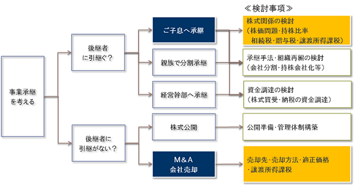

事業承継
事業承継
事業承継における税金対策
オーナー経営者であれば、誰もが直面する問題が「事業承継」です。
事業承継対策を行っていますか？という質問に対して、
「株価対策や株の承継はやっている」であるとか「顧問税理士がきっちりと相続税対策をしてくれている」という声はよく聞きます。
具体的には、
- ・贈与税が発生しない範囲でご子息へ毎年少しずつ株式を渡していく
- ・保険加入や退職金を利用した株価対策
- ・類似業種比準方式を見据えた株価対策
- ・借入をしての不動産購入による株価対策 など
多額の相続税の発生を減らすために株価を低く抑えるための対策です。確かにこれらも「事業承継」対策として重要な対策です。
弊社では、会社に応じた事業承継対策アドバイスを行っております。
事業承継における別の視点
しかし、上述の対策は相続税額の発生を減らす方向ですので、オーナー経営者様（被相続人）がキャッシュ（現預金・現金同等物）を保有する形は極力避けた方がよいという結論に至ります。
しかし、本当にそうでしょうか。
確かに会社を永続させるために会社の経営権はきっちりと引き継いでおく必要がありますが、起業し会社を成長させてきたオーナー経営者様は、本当に無償で株式を承継し、退職金をもらうだけでよいのでしょうか。
本来、会社の株式は、いままでの経営者様の経営判断と努力により大きな価値を持ったものであるはずです。それを換金しキャッシュとして保有し、万が一の場合には、そのキャッシュが相続されるということでは問題でしょうか。もちろん相続されたキャッシュにより納税資金はあります。
弊社では、一般的な事業承継対策に加え、オーナー経営者様のキャッシュイン最大化を見据えた事業承継対策アドバイスも行っております。
ご子息が複数名の場合こそ
承継するご子息が1名である場合は財産権の承継の面から相続税の悩みが中心となりますが、仮にご子息が複数名いるような場合、以下のケースが想定されます。
以前からご子息が協力して会社の運営に十分関与できている場合
このような場合には、力を合わせて会社の経営を承継していく準備が整っていると考えられ、ご子息が1名の場合と同様に株式の承継等の財産権の承継が中心的な検討事項になることが多いと考えられます。
ご子息が複数名いるものの、後継者が明確に決まっていない場合
オーナー経営者様が現役の間は、後継者を決めかねている（ないしは息子が会社とは別の仕事に従事している）ことも多く、このようなケースでも事業承継というと財産権の承継が中心的な議論になることが多いのですが、オーナー経営者様がまず考えるべきことは、会社の後継者をどうするのかということになります。
ご子息達が互いに協力して会社の経営を行ってもらえれば理想ですが、通常、社長の座は通常１名ですし、会社の従業員から後継者と認めらるにはそれなりの時間が必要となります。
また場合によっては、ご子息間で意見が対立することも考えられます。そのような場合、財産権の承継とリンクしたことでもあるため、場合によっては、会社分割や事業譲渡等により会社を2つに分けることで経営権と財産権を事前に2つに分けておくといったことも考えていく必要があります。
このように、ご子息に会社の事業を配分することで経営権・財産権の承継の土台を作るといったスキーム検討が重要な場合もありえます。
事業承継とは
-
「事業承継」とは
会社の経営を、いつ、誰に、どのように承継していくかを考えることであり、「経営権（社長の座）」と「財産権（自社株式の所有）」を適切な人材に譲り渡すことで今の事業を引継ぎ、事業を存続させることです。
-
経営権の承継
経営承継の留意点は、次期経営者が従業員はもちろんのこと得意先・金融機関等の各種ステークホルダーから経営者としての承認を受けることです。そのために、新しい経営ビジョンを示した次期経営者による新経営計画の策定が有効なツールになりえます。
-
財産権の承継
事業承継問題で最も重要な問題であり、現オーナー保有の自社株式を出来るだけ効率的にいつ、どのように後継者に引継ぐかの「自社株式の承継」の問題です。
後継者は、経営者ご自身のご子息のみならず外部の第三者ということもありえます。
なお、財産権の承継にあたっては、株価対策以外にも、承継手法の検討・組織再編の活用の検討、買取・納税資金の検討など、様々な視点からの検討が必要となります。
-
事業承継のフォローチャート
事業承継における財産権の承継に関しての一般的な検討の流れは、以下の通りとなります。

M&Aの可能性
会社の後継者＝ご子息とならない現状
最近、関西圏（大阪・神戸・兵庫・京都・奈良）の中小企業様におかれましても、会社の後継者＝ご子息とならないケースのご相談が増えております。これは、以下のような理由によるものです。
ご子息がいない、ご子息に承継の意思がないケース
- 純粋に後継者となるご子息が不在である
- ご子息が他の業界・業種に就職してしまい、会社経営に興味を持たない
現経営者がご子息に承継させる意思がないケース
- すでに社長職を親族以外に第三者に譲っており、その社長＝後継者とする場合
- 会社（ないしは事業）にとって、同業者等の第三者に譲った方がよいと判断した場合
- 現経営者様が築き上げてきた会社を売却することで、資金化を望む場合
「事業承継」における「M&A」の活用
上記のようにご子息が承継できない場合、昔は「廃業する」しかないと考える経営者が多かったのですが、最近では中小企業でも「Ｍ＆Ａ」に対しての敷居が下がっており抵抗感もなくなってきているため、第三者への株式売却等「Ｍ＆Ａ」を活用した事業承継を選択することも、やりやすい環境になってきていると言えます。